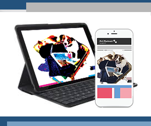

Your favourite Pet photos into Photoart to display in your home or on your devices.
Put us in your home or take us away with you
Pet Photoart creates beautiful artworks of your favourite pet photos.
You can choose from a number of artforms.
STUDIO PAINTING

The studio painting looks authentic and removes the original background to create the look of a unique oil painting.
POP ART

Pop Art is reminisient of the style that Andrew Warhol introduced in the 60s.
It is a great look to make the colours pop!
DECOR
Decor artwork allows you to select your colour to match your room or devices.
The look will be the same as shown but the colour will vary.

You can choose from a number of displays.
There are a number of display types print or digital to show in your home or to take with you on your wall, computer or phone, ipad or laptop when you travel.
WALL PRINT

CALENDER
DEVICES
It's as easy as 1, 2, 3...
1. Submit Photo by attaching file here
2. Select Artwork Sample by ticking the box
3. Select Desired Display by ticking the box
Register
Payment Details
Submit your order
Terms and Conditions
Tell your friends about us
ABOUT THE ARTIST

Bern lives in Melbourne, Australia. She is an artist, designer and loves animals.She desired to create Photoart as she wanted to create beautiful keepsakes of pets. Currently she has Marlon who features in the photos with his buddy Rudy who passed away recently.This is one of her favourite photos that she wanted to share with you. It was not staged, she returned from a business trip, was interrupted when unpacking, returned to her room to find her doggies in her suitcase. The moment is now captured forever in Photoart.
Pet Photoart Copyright 2017